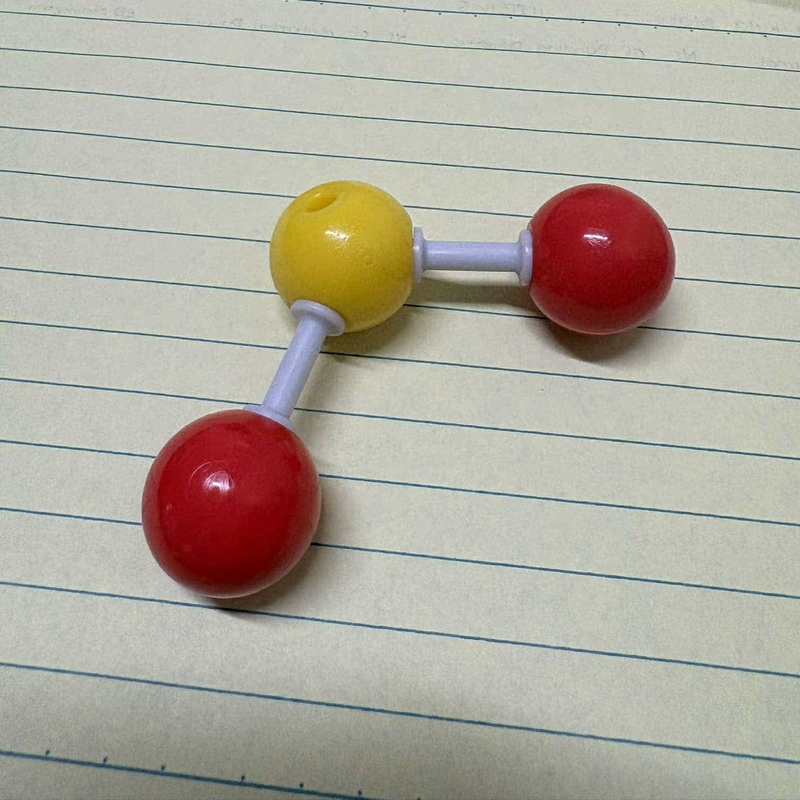
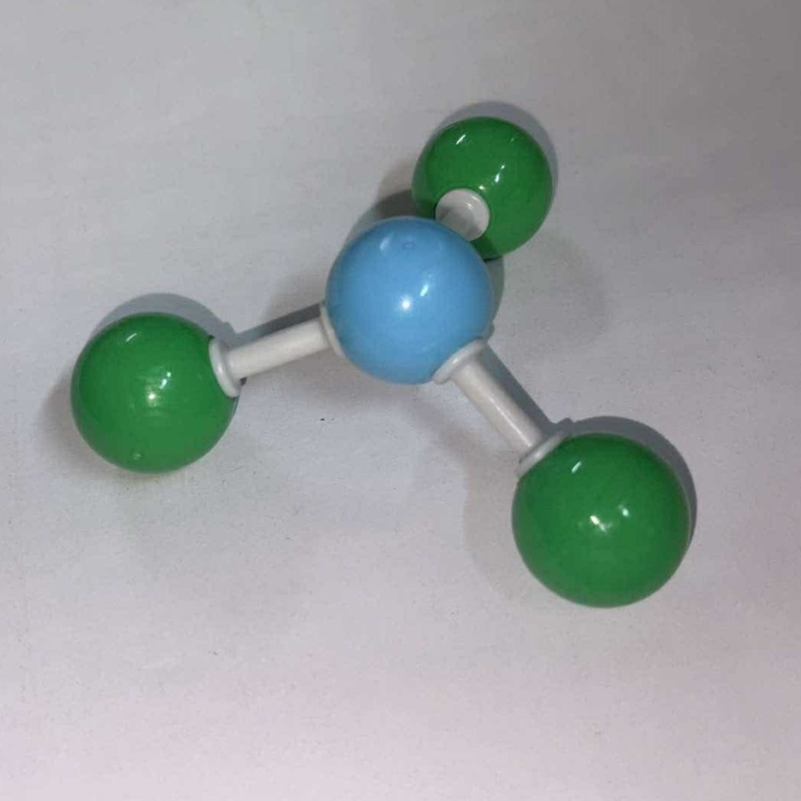
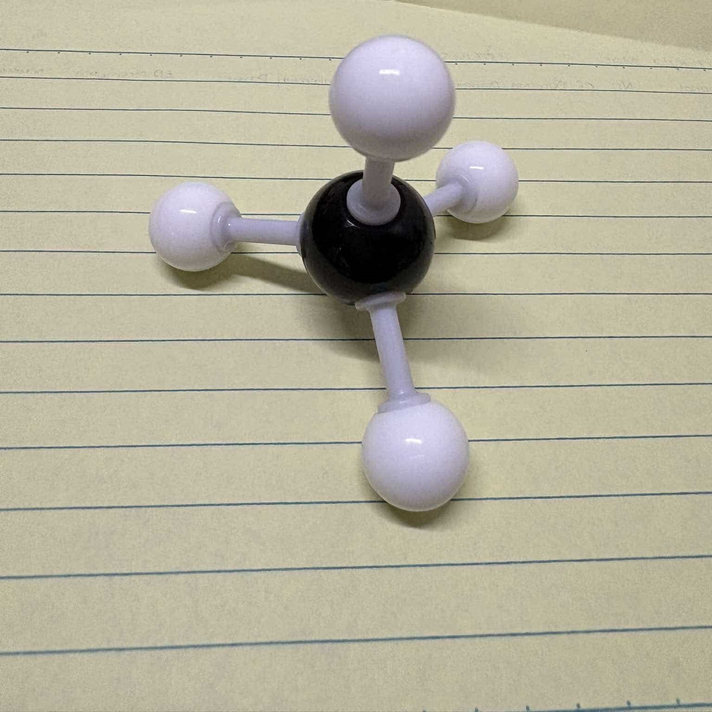
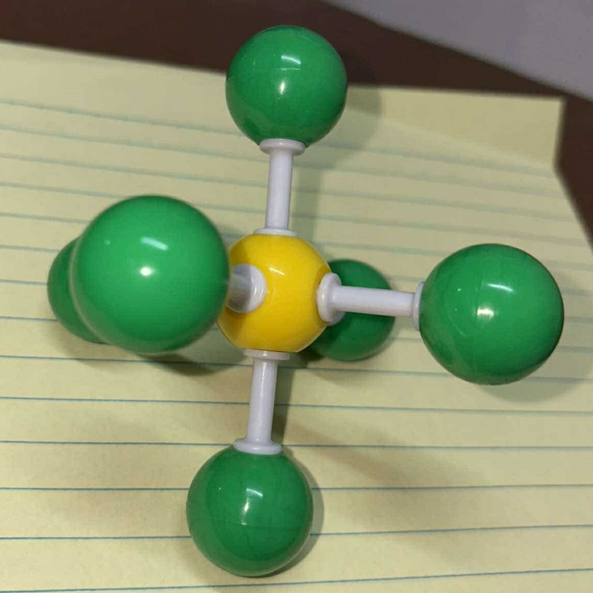

General Chemistry 1
Quarter 2 Performance Task 1

What is Molecular Geometry?
A molecular structural model is a scientific representation that depicts the arrangement of atoms within a molecule. This model is crucial in understanding the spatial configuration, bonding, and interactions of a molecule, providing valuable insights into its chemical properties and behavior. They connect theoretical ideas with real-world applications, promoting innovation and discovery across various fields.
Experiment Results
| Compound | # of Bonding Domains | Lone Pairs | Bond Angles | Molecular Geometry | Picture of Model |
|---|---|---|---|---|---|
| SO2 | 2 | 2 | 120° | Bent | .jpg) |
| H2O | 2 | 2 | 104.5° | Bent |  |
| BF3 | 3 | 0 | 120° | Trigonal Planar |  |
| CH4 | 4 | 0 | 109.5° | Tetrahedral |  |
| SF6 | 6 | 0 | 90° | Octahedral |  |
Documentation of Results
Data Analysis
In the experiment we experimented using the molecular model kit, which is very important because this helped us understand and identify different molecules using the model. This allowed us to identify its molecular geometry, electron domain geometry, and the bond angles. Additionally, it provided a hands-on approach to visualizing molecular structures, making abstract concepts more tangible. This practical exercise enhanced our comprehension of how molecular shapes influence the properties and interactions of different compounds.
Discussion
Molecular Geometry is the arrangement of atoms within a molecule in 3-dimensional space, while Molecular Modelling plays an important role in understanding the structure and reactivity of molecules. Through molecular modelling, the group was able to describe the number of lone and bond pairs of the given compounds. With both of the concepts combined– and with the help of Lewis structures, we were able to recognize different molecular shapes, its electron domain, and their bond angles.
Conclusion
In conclusion, molecular modeling and geometry serve as essential tools in the study of chemistry. It facilitates improvements in a range of scientific and industrial applications by offering valuable information on the characteristics and behavior of molecules. The potential for new discoveries and advancements in technology is immense as we continue to develop our computational skills and deepen our knowledge of molecular interactions.
How is Paper Chromatography Used in Real Life?
Molecular model and geometry in real life Molecular geometry is usually applied to determine the shapes and properties of molecules. It applies a theory called VSEPR. Molecular geometry helps scientists to further understand the complex shapes of more complex molecules such as nucleic acid, lipids and carbohydrates. The functions that these molecules carry out in our bodies are greatly influenced by their forms.
References
Molecular Model - an overview | ScienceDirect Topics. (n.d.)
Molecular Models: Unveiling the hidden architecture of molecules. (n.d.). Klinger Educational.